闹钟响了。6:30。
我没有像第一次那样迷茫，也没有像第二次那样兴奋。
循环#3。这次，我不是在重活一天——我是在逆向工程这一天。
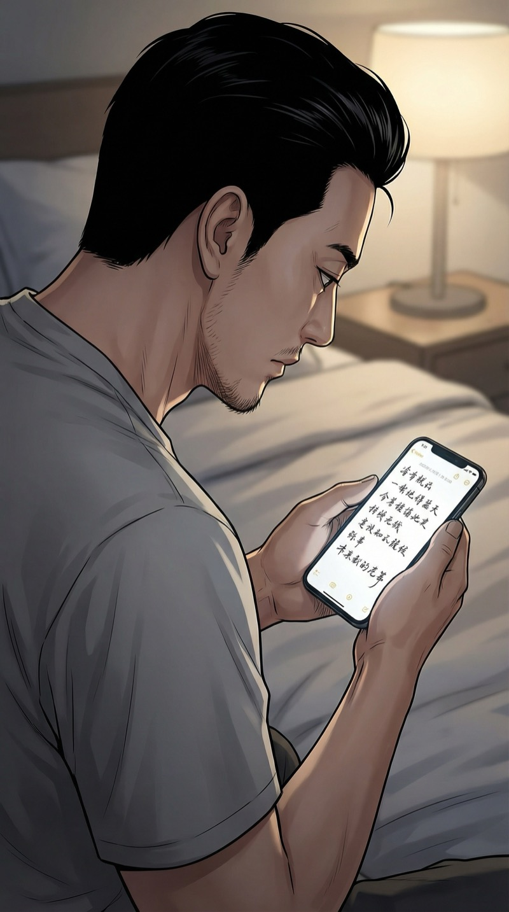
坐在床边翻开备忘录——上次循环结束前写的笔记还在。记忆跨越了重置。
已知bug四个：路演心脏骤停（已修复）、小陈神秘电话（未解）、苏琳的名单（未解）、李总双线操作（未解）。
今天的任务——逐个debug。
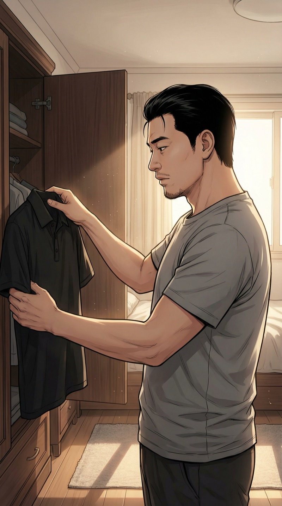
打开衣柜。上次穿西装路演确实精神，但路演前要做"外勤情报工作"。
得穿灵活点。
黑色polo衫、深色休闲裤、运动鞋。低调但随时能跑。
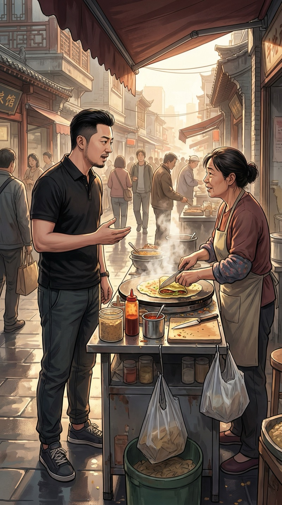
"姐，加两蛋。上回加一个不够。"
煎饼大妈笑着说："第一次见创业的这么早起来吃煎饼。"
岂止早起，我都活了三遍了。这煎饼我吃了三次还觉得香，说明大妈手艺是真的好。
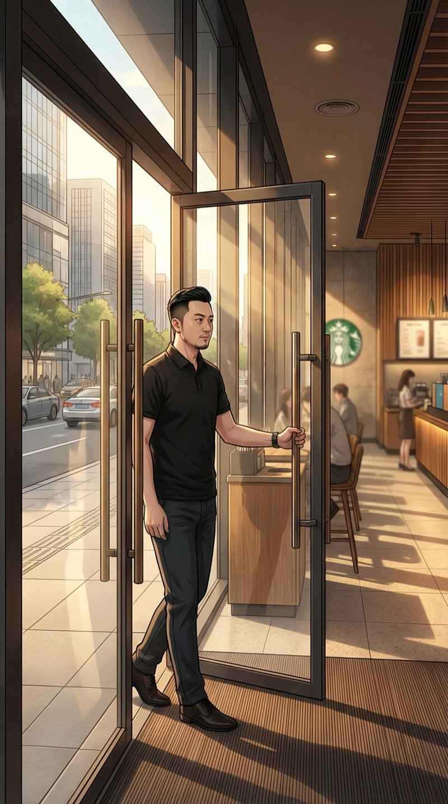
没有直接去公司。我记得苏琳每天早上8:00准时在公司楼下咖啡馆接电话。
第一次循环我不知道。第二次循环偶然听到。这次——主动出击。
找了个角落坐下，点了杯美式。假装低头看手机，余光锁定门口。
7:58。7:59。
8:02，苏琳准时推门进来。手机已经贴在耳朵上了。
她背对着我在吧台点单，声音压得很低，但咖啡馆早上人不多——
"……对，最多三个核心的……不，后端那个不行……我说了明天之前……"
片段。关键词："核心的"、"明天之前"。
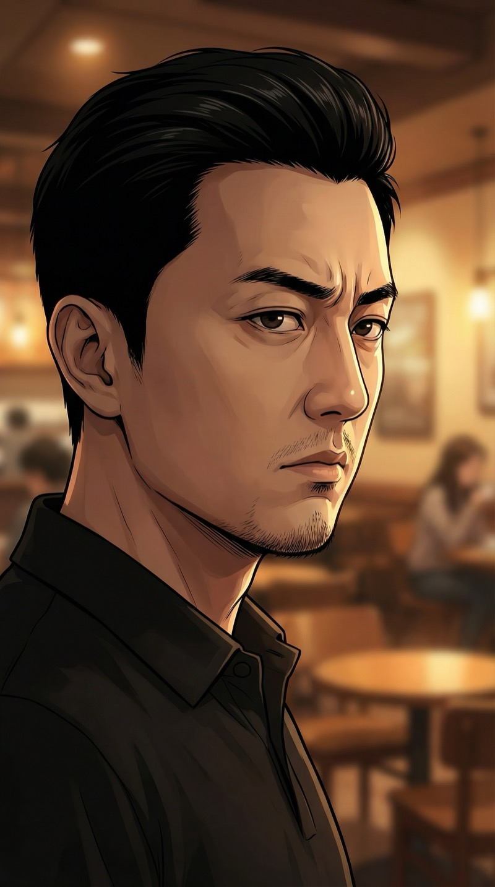
我的手停在咖啡杯上。
不是"名单"。是"核心人员名单"。她在挖人。
对方的deadline是明天——但对我来说，没有明天。每一天都是今天。
到公司。前台："朱总早！今天路演加油！"
我微笑点头。一模一样的台词，第三遍了。
如果这个循环再来一百次，我能把全公司每个人每句话背下来。好处是——永远不用社恐了。
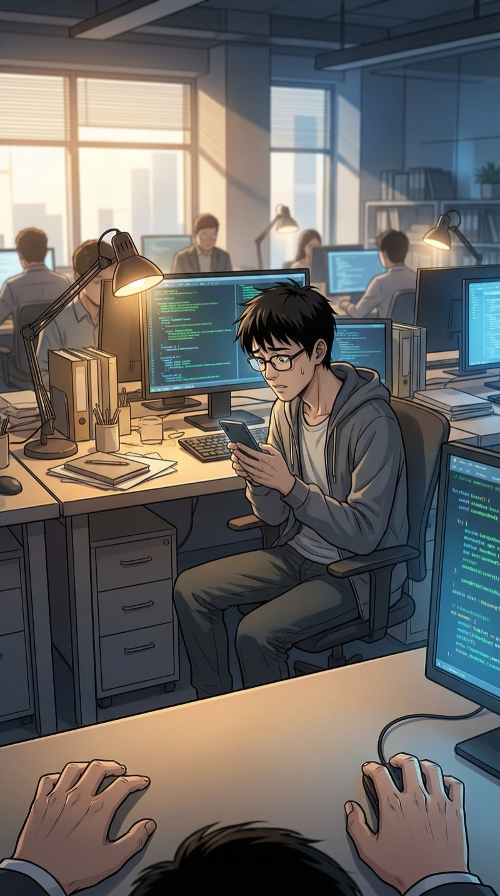
没进办公室。先绕到技术区。
远远看见小陈在工位上，低头盯着手机，表情紧张。和前两次一模一样的动作——在这个时间点，他永远在看手机。
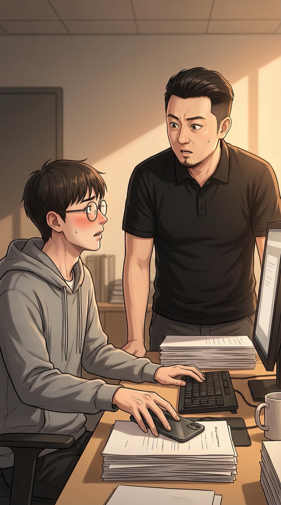
我故意把脚步声放大。小陈听见了——啪，手机锁屏扣在桌上。
"阿陈，待会路演你在就行，PPT我来讲。"
"好……好的哥。"
他的眼神在躲。第三次看到这个表情了。
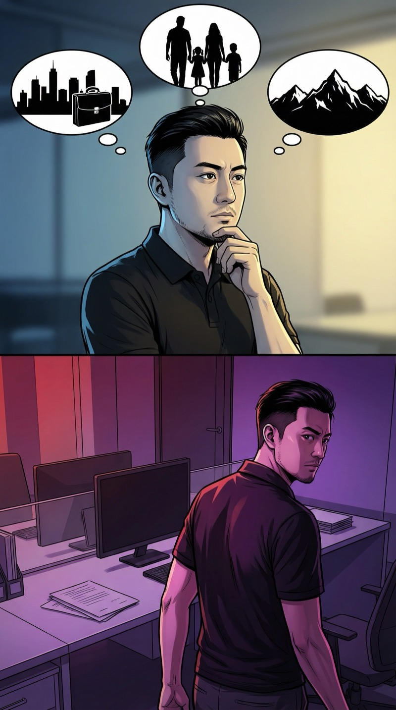
怎么搞清小陈的秘密？
A 直接问他"你有什么事就说"——真诚牌
B 编假消息试探反应——钓鱼执法
C 趁他离开，看手机通知 ◀ 我的选择
前两次循环已经用了观察模式。够了。这次升级——我需要确切信息，不是猜测。三次循环的耐心用完了，该拿结果了。
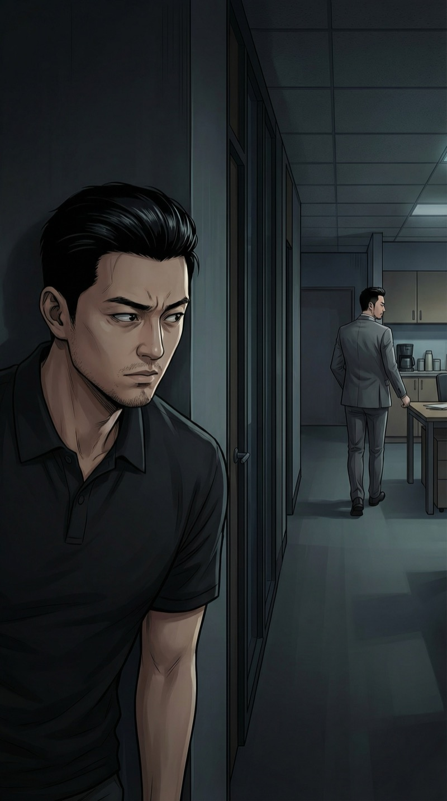
假装离开，走到走廊拐角蹲下。
一分钟后，小陈起身去茶水间。
我快步折回他的工位。心跳加速——不是因为紧张，是因为我要当面看清一个真相。
手机锁屏——但通知栏弹了一条消息。
"陈工你好，关于我们上次聊的技术VP岗位，offer细节已发邮件，年薪……"
后面被截断了。但已经够了。
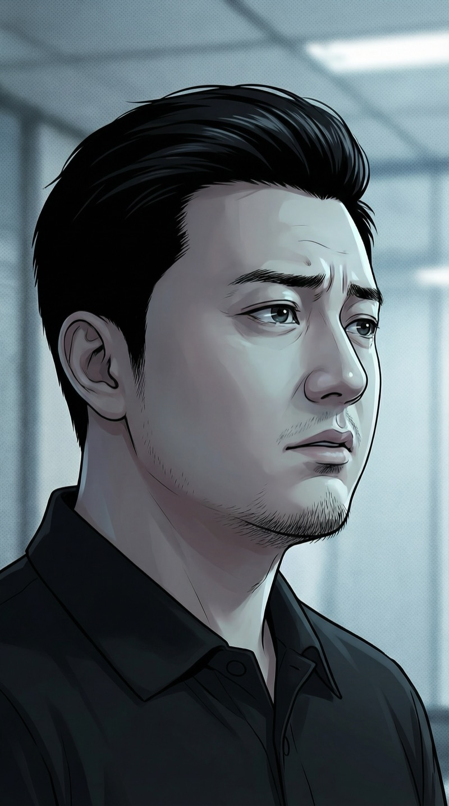
我没有愤怒。
大厂挖我的CTO。年薪……我们全年的期权都给不出人家的零头。
说实话，换我是小陈，我也会犹豫。
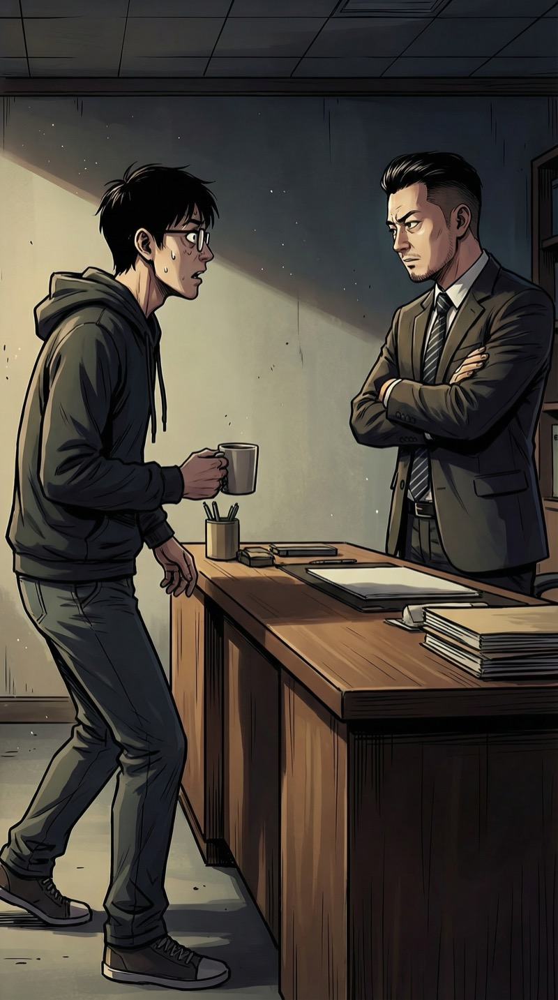
小陈端着咖啡回来。
看到我站在他工位旁。
空气凝固了。咖啡杯的热气是唯一在动的东西。
摊牌。
A 直接坦白"我知道了"，问他怎么想 ◀ 我的选择
B 装没事，继续隐忍观察
C 半真半假开玩笑试探
三次循环了。信息够了，不需要再试探。朱江的本性——菩萨心肠，霹雳手段。菩萨在先。先听他怎么说。
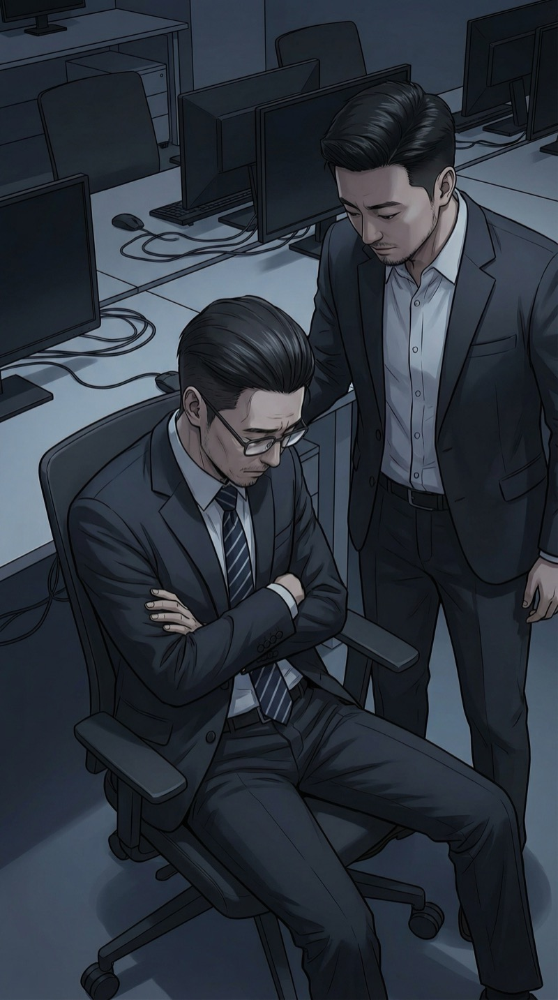
我说："阿陈，大厂offer的事，我知道了。"
他愣了三秒。然后低下了头。整个技术区安静得能听到显示器的电流声。
"哥……他们给的是年薪300万。我们……我连房贷都……"
我没有生气。因为三次循环让我理解了一件事——大家都在这一天做着某种选择。不只是我。
路演准备间。换上深蓝色西装、白衬衫，没打领带。
第三次站上这个台了。第一次死了。第二次成功但什么都没看到。
这一次——路演不是目的。李总才是目的。
"我们的AI不是要替代人，是要让每个人活成超级个体……"
台词已经讲了两遍，这次说得比脱口秀还顺溜。
讲到第三遍，我甚至开始即兴加梗了。创业者演讲的极致——连自己都信了。
路演结束。这次我没等李总来套近乎。
我直接走向他旁边那个"交换眼神"的人——上次循环锁定的可疑目标。
假装拿名片，"不小心"擦过那人的肩膀。
"抱歉抱歉——"顺势低头看了一眼他的胸牌。
胸牌上四个字：张远，星耀资本。
我的心跳漏了一拍。
星耀资本……那不是我们竞对的领投方吗？！
拼图瞬间拼完了。
李总不是脚踩两条船。他是在做一场局——
今天听我路演，拿到我的方案，然后去给竞对比价。我不是融资对象。我是谈判筹码。
我是"筹码"。怎么办？
A 止损，转投其他基金
B 将计就计——投喂假情报，测试李总反应 ◀ 我的选择
C 正面对质："你到底投不投？"
我有时间循环。这次不需要最终结果——我需要的是测试李总的反应。给他假信息，看他传不传。下一次循环就知道他的真实立场了。
黑客的本能：把时间循环当渗透测试工具。
我端着咖啡，不经意地走到李总身边。
"李总，说实话我们技术路线还在纠结——方案A和方案B各有利弊，还没拍板……"
这是假信息。我们的技术路线一个月前就定了。
李总微微一笑："创业嘛，技术选择确实最关键。"
笑容很职业。话很空。回答太快——说明他不是在思考，是在收集。
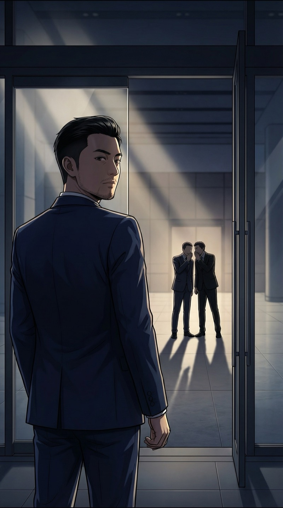
离开会场时我回头看了一眼——
李总已经在和张远窃窃私语了。两个剪影在落地窗前凑得很近。
鱼已经咬钩了。下一次循环，我就能看到这条鱼有多大。
下午回到公司。脱掉西装外套，挽起衬衫袖子。
三条线：小陈已经摊牌了。李总的测试已经埋下。现在——苏琳。
调出公司CRM系统和运营后台。最高权限，CEO的好处之一。
黑客查系统不是看正常的数据，而是看不正常的"空白"——哪些该有的记录消失了？哪些流程被绕过了？
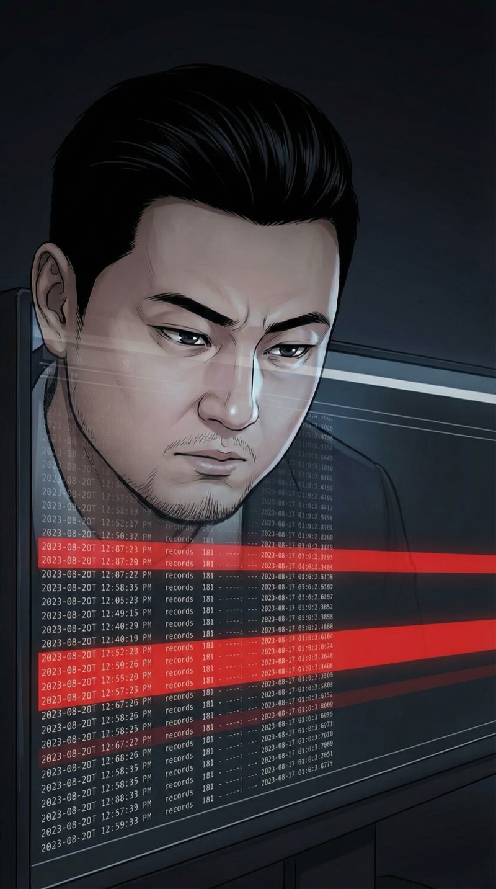
找到了。
三周前开始，苏琳把核心客户的联系方式从公司系统导出到个人邮箱。记录被删了——但日志里的痕迹删不掉。
她不只是要带人走。她是要带客户走。
靠在椅子上，深吸一口气，手盖住了半张脸。
一天之内：CTO要跑、投资人在利用我、运营总监准备带人带客户投敌。
这哪是创业啊，这是宫斗。
如果有个系统面板，我的公司血条大概只剩10%了。
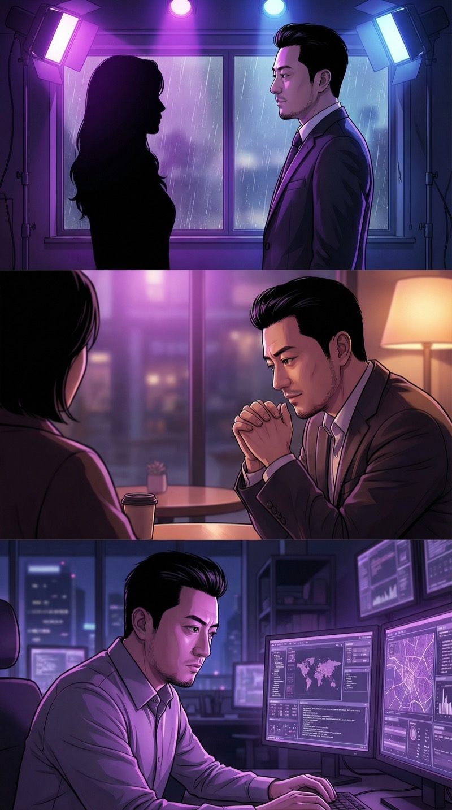
苏琳，怎么处理？
A 今晚就开除她，锁死系统权限——霹雳手段
B 谈心，看能不能挽回——菩萨心肠
C 不打草惊蛇，本次循环只收集情报，下次循环完美收网 ◀ 我的选择
时间循环不是让我急着解决问题的。每次循环是一次情报收集。这次搞清她的完整计划，下次一招制敌。
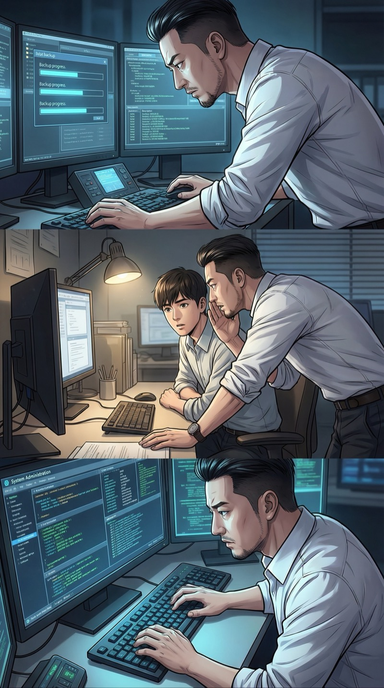
剩下几个小时，我做了三件事：
一、把苏琳已经导出的客户数据做了完整备份。
二、联系了运营组里唯一一个被我信任的人——暗桩。
三、在系统里设了一个隐蔽的权限限制——她不知道，但她已经无法再批量导出任何东西。
不能阻止她走。但可以让她走的时候——带不走东西。
权限修改完成。日志里没有任何痕迹。
当年在安全圈学的那些"防御性编程"，没想到用在了自己公司的内鬼身上。
晚上九点。苏琳果然在会议室打电话。透过玻璃能看到她在来回踱步。
我没去偷听。不需要了。
这一次循环的任务完成了。苏琳的计划、小陈的困境、李总的局——三条线全部明确。
下一次循环——execution。
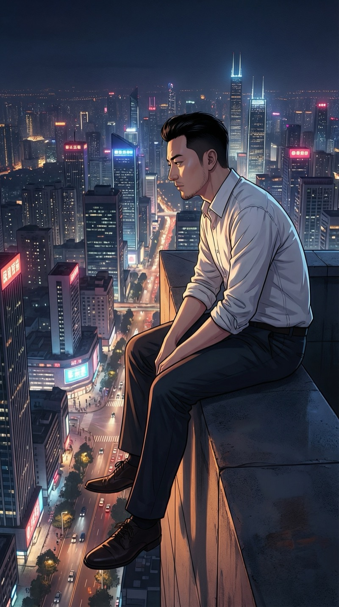
一个人坐在公司天台上。城市灯火在下面铺开，像一块电路板。
三次循环，我发现了一件事——
这一天的问题不是路演。路演只是表面。
真正的问题是：我不了解身边的人。
一个月拼命做产品，却没发现CTO在犹豫、总监在叛变、投资人在利用我。
时间循环给了我最稀缺的东西——停下来，看清周围的机会。
当然，看清之后只想说一句——创业真TM难。
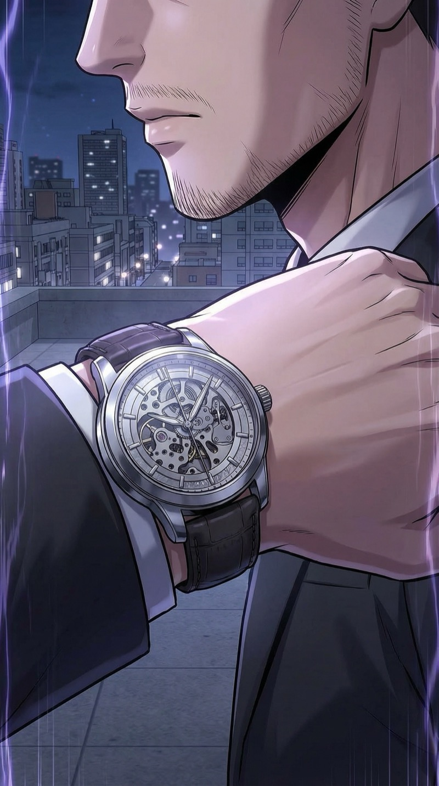
00:00。
表针停住。远处的霓虹灯定格在闪烁的一瞬间。风停了。
这次我甚至没有慌。只是看了一眼表，心想：
又来了。
6:30。闹钟。灰色T恤。深蓝短裤。一切重置。
但备忘录里的笔记越来越密了。三次循环积累的情报，够写一份公司内部审计报告了。
开始写作战计划——精确到分钟的时间线：
6:30-7:30 准备阶段
7:30-8:00 咖啡馆截获苏琳通话（已知，用来反制）
8:30-9:00 和小陈摊牌（直接给方案，不浪费时间）
9:00-10:00 路演前准备反间信息v2
10:00-11:30 路演+投放假信息
12:00-18:00 执行苏琳反制方案
18:00-24:00 观察结果
四次循环。该从debug阶段进入——上线阶段了。
正准备起身出门——
手机嗡了一下。不是闹钟。不是App通知。
一条新消息。来自一个从未见过的号码。
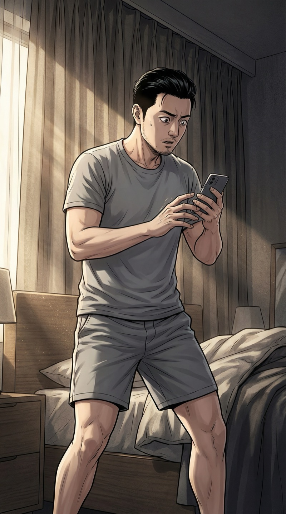
消息内容：
"你已经循环了3次了。够了吗？"
我差点把手机扔出去。
什么？！有人知道我在循环？！
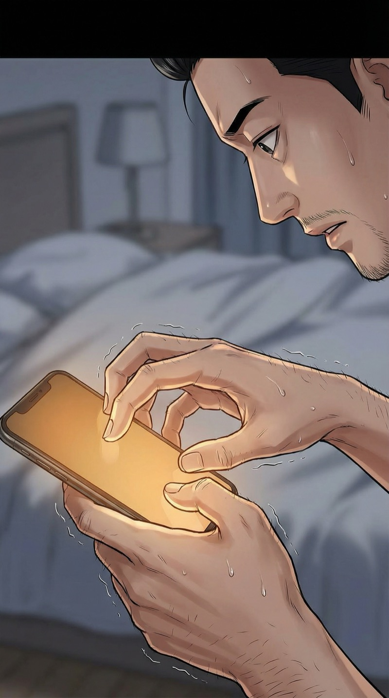
手指有点抖。深呼吸。打字：
"你是谁？"
发送。
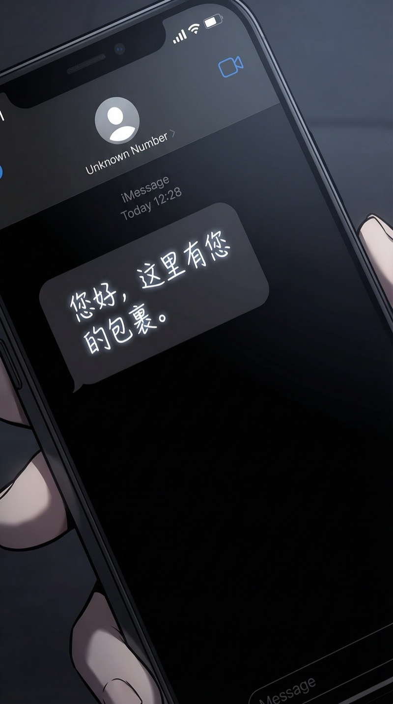
秒回。
"一个也在这一天里的人。我们需要谈谈。"
坐回床边。双手抱头。大脑像CPU一样全速运转。
前三次循环我以为自己是唯一的循环者。
我以为这是"我的"时间循环。
如果有另一个人也在循环——这一天的规则，比我以为的要复杂得多。
站起来。
眼神从震惊变为锐利。晨光从窗帘缝隙切进来，像一道白刃。
好。新的变量。
但我是黑客——未知变量不是威胁，是新的入口。
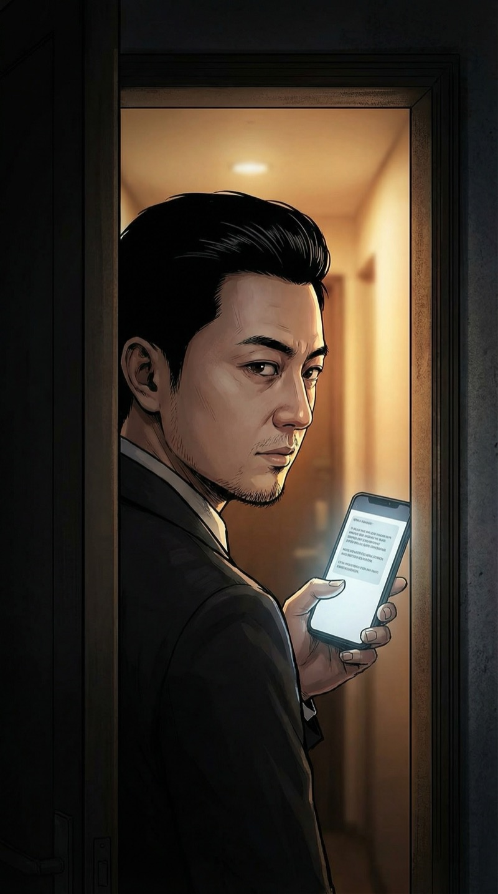
出门的时候回头看了一眼手机。那条消息还在屏幕上。
第四次循环。
我不再是一个人在debug这一天了。
第三次循环：三条线全部查明
第四次循环：新变量出现
"另一个循环者"是谁？为什么在第四次循环才联系我？
更重要的是——如果有两个人在循环，那让时间循环开始的原因，可能根本不是"我的死亡"。
第四次循环。从单人debug，变成双人协同。
但协同的前提是——我能信任一个陌生人吗？